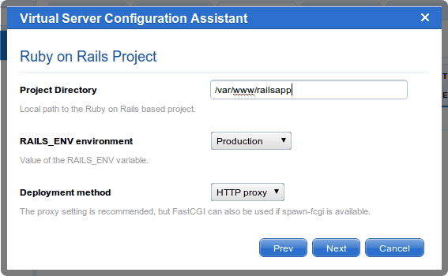
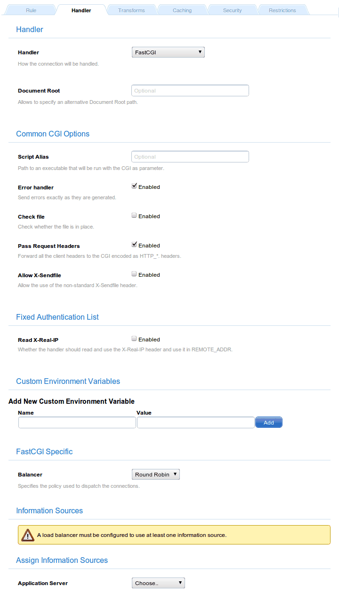
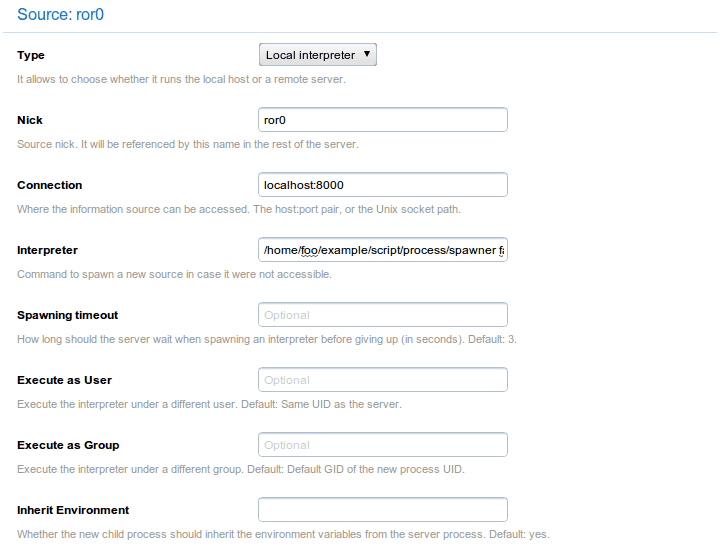
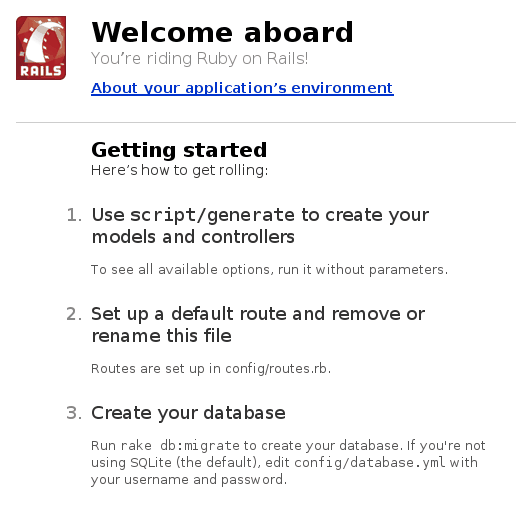

# gem update --system # gem install rails
Setting up a Rails application to run with Cherokee is not only easy. It is also the best possible solution to manage the load among a bunch of servers running Rails. This is done by using an extremely efficient web server to manage the web part and leaving as many free resources as possible to Rails.
There is a screencast available at the Cherokee-Project website to demonstrate how easy it is to use the Rails wizard.

Preparing the framework
Of course you will need a working Rails installation for this to succeed. You can set this up easily. If you have Ruby and Ruby Gems installed, you can directly install the Rails gem like this:
Note that on Debian based systems you don’t even need to install Rubygems. There is already a package that will install every needed dependency:
# apt-get install rails
The installation of the Rails gem directly would also work, but note that you cannot execute the first command because it is disabled by default.
# gem update --system
ERROR: While executing gem ... (RuntimeError)
gem update --system is disabled on Debian. RubyGems can be updated \
using the official Debian repositories by aptitude or apt-get.
You can also install some other gems. thin, mongrel, unicorn, rack and fcgi are some that you might find useful.
Once you are done with that, you must deploy your Rails project:
$ rails example
You can do so wherever you want, but the usual recommended way of doing this is by deploying it outside of your web root path and then creating a symbolic link. This is simply to protect from exposing all the files that do not need to be in your document root.
Assuming you deployed the example project in /home/foo/example, and you have writing permissions to your web path, /var/www, simply type:
$ ln -s /home/foo/example/public /var/www/example
Now you are ready to configure Cherokee.
Preparing Cherokee
You can either do it by hand, or you can use the appropriate wizard for a hassle-free configuration.
Setting up Cherokee with the wizard
You should really use the recommended method, which is using the configuration wizard provided by Cherokee-Admin. Simply go to the virtual server list page and click on the Add button at the top of the panel to show the list of available wizards. This will allow you to set up a new dedicated virtual host for your Rails application. Once in there, use the Add button at the top of the panel to see the available wizards.
If you wanted to configure Rails to run under a web directory of an existing virtual server, you would have to launch the wizard from within the specific virtual server, visiting the Behavior tab and trigger the Rule panel by clicking on the Rule Management button.

Wizards
Now, you will have to select the Platforms category, and run the RoR wizard. You will be asked for some basic parameters about the installation, and the wizard will try to fill in automatically as many entries as possible. The virtual server configuration will cover the vast majority of the cases. Most probably it will cover your needs, although you are free to modify it as you will. No more configuration is needed after this step.

The wizard in action
It is usually best to proxy one or several of the servers used by Rails, be it Thin, Mongrel, Unicorn or whatever it can handle. You could also choose the FastCGI alternative if there is a suitable spawning method in your system. This approach, however, has been known to give inconsistent results on several releases of Rails. In particular, Rails releases 2.3 or higher are known to give errors when used with FastCGI. You will have to test it out and choose the method that best suits your need.
Setting up Cherokee by hand
If you decide to ignore the configuration wizard you can set up everything by hand. Although it is not complicated, this method is not recommended.
You only need to know that you can spawn the FastCGI process using a script that is already in your deployed project. In this case, /home/foo/example/script/process/spawner. We will be using the default parameters (3 instances starting at port 8000) but you can fine tune this using the many parameters provided by the script.
The process is fairly simple. Set up a new rule for this new path and manage it with the FastCGI handler.
Common CGI options
Under Common CGI options make sure to check the Error handler box and uncheck Check file. This is to prevent possible errors with the INFO_PATH generation that can happen when an application, in this case Rails, manages the whole subtree. This is mentioned in the Common CGI section of the documentation. It is a good idea to enable the Error handler checkbox since it will help you determine if an error is associated with your Ruby on Rails application or with Cherokee. This, however, is not required.

FastCGI handler
FastCGI specific
Under FastCGI specific make sure to add the hosts providing the service. Do this by adding one or more Information Sources.
Note that, in the definition of the information source, you will have to manually launch the spawner if you use a Remote host as Information source instead of a Local interpreter.
You will simply have to add as many sources as desired, for instance our example uses the default values to set up ports 8000 through 8002. These sources will be nicknamed ror0, ror1 and ror2.
| Host | Interpreter |
|---|---|
localhost:8000 |
/home/foo/example/script/process/spawner fcgi |
localhost:8001 |
/home/foo/example/script/process/spawner fcgi |
localhost:8002 |
/home/foo/example/script/process/spawner fcgi |
If any of those ports was not reachable, the interpreter command would be launched and the fallen one would be reinstantiated.
According to that table, the creation of the ror0 information source would use the following settings. The rest are similar using the port variation detailed above.
| Nick | Connection | Interpreter |
|---|---|---|
ror0 |
localhost:8000 |
/home/foo/example/script/process/spawner fcgi |

ror0 information source
Once everything is done you can check if Rails is really working. Simply navigate to the path configured by your rule, http://localhost/example/ for instance, and you should see some notes about your recently created project.
